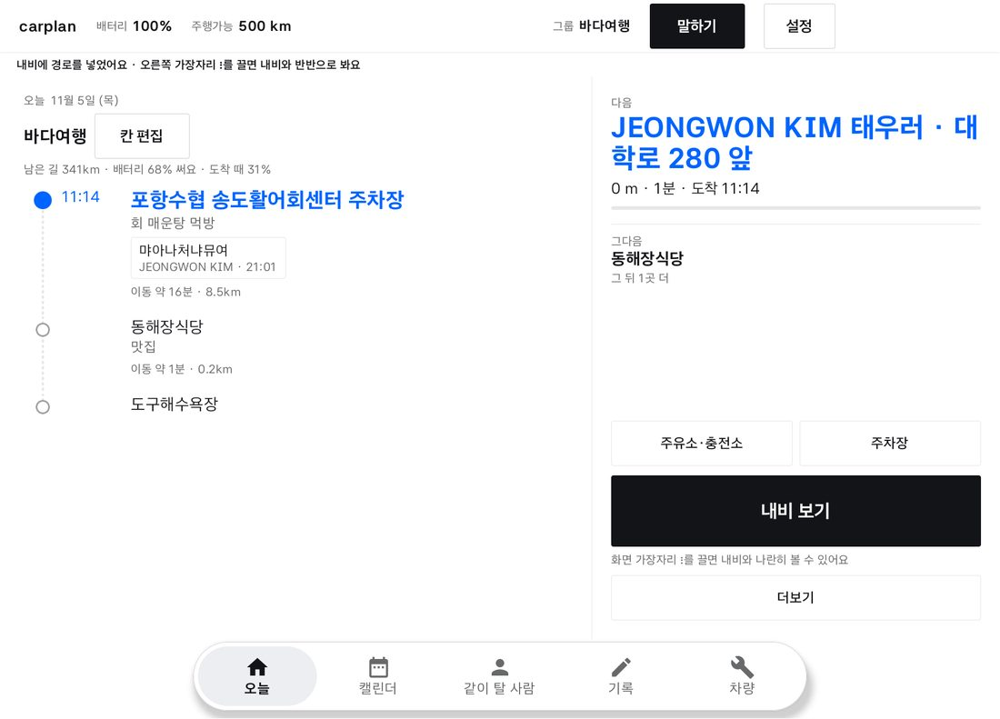
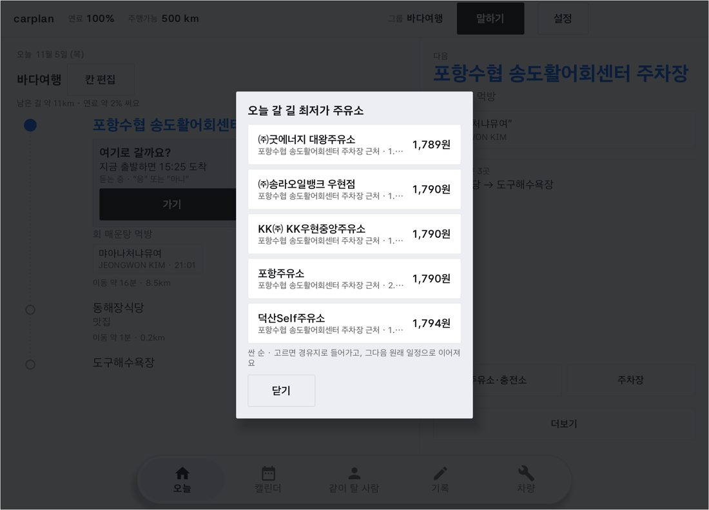
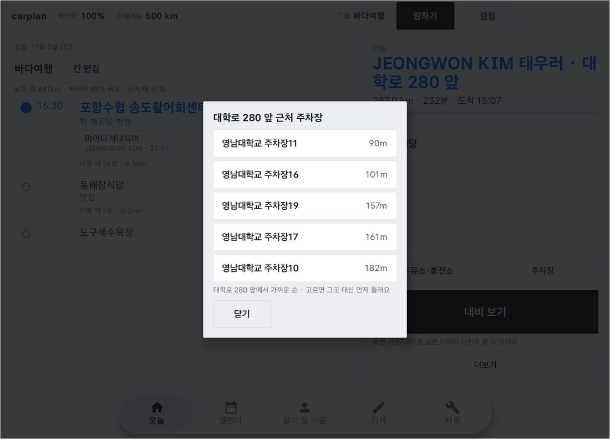
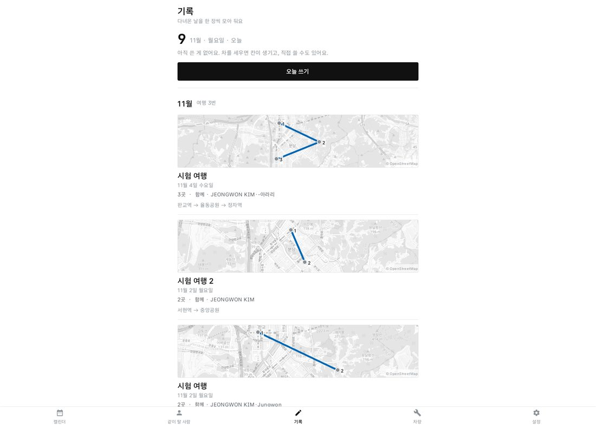
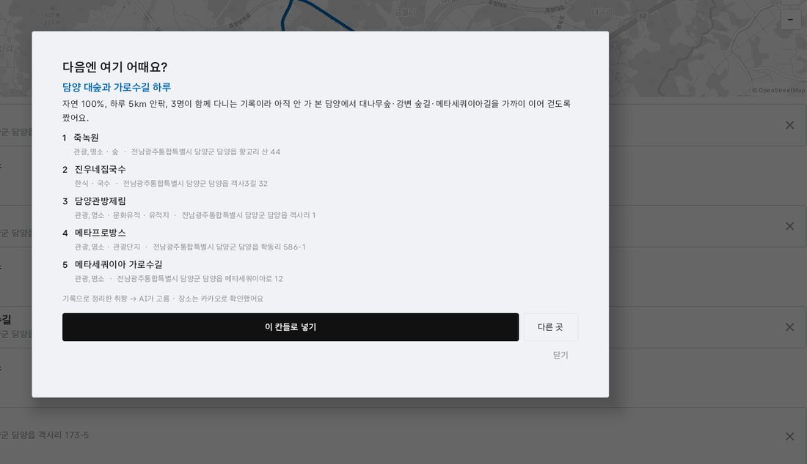

carplan
이 안내서도 그 순서 그대로입니다. 일행이 폰에서 일정을 바꾸면 달리는 중인 차 내비가 바로 바뀌고, 차가 설 때마다 기록이 한 칸씩 쌓여 다음 여행 추천의 재료가 됩니다.
5분 체험 순서
두 APK(차·폰)를 깔고 아래만 따라 하면 전체 고리가 한 바퀴 돕니다.
- 차: Pleos Connect 에뮬레이터(Cold boot)에 차 앱 설치 → 폰: 폰 앱 설치, 이름 넣고 시작
- 차 화면의 6자리 코드를 폰 첫 화면(또는 차량 탭)에 입력 → 이 차의 차주가 됩니다
- 폰 캘린더에서 날짜를 눌러 여행을 만들고 장소 칸을 2~3곳 넣기 → 차 "오늘"과 내비에 바로 반영
- 차 화면 왼쪽 위 "carplan"을 길게 누르면 시연 메뉴 → [오늘 시험 여행 만들기] → [시뮬레이션 재생]: 타기 → D → 실제 도로 주행 → 도착 → P → 기록 칸이 생기는 것까지 자동 재생
- 폰 기록 탭: 다녀온 날이 일기장으로, 맨 아래 "다음엔 여기 어때요?" AI 추천 → [이 여행 만들기]
adb forward tcp:8088 tcp:8088 후 127.0.0.1:8088)로도 보낼 수 있지만, 시연 메뉴가 다 대신 눌러 줍니다.1시작 — 한 번만 하면 됩니다
차와 폰을 잇는 건 6자리 코드 하나. 그 뒤로는 모든 게 자동으로 오갑니다.
설치와 차 연결 폰 + 차
폰 앱은 이름만 넣으면 시작합니다(구글 로그인은 나중에 해도 됨). 차 화면에 뜨는 6자리 코드를 폰에 입력하면 이 차의 "차주"가 되고, 차주가 만든 일정의 일행은 그날 일정을 같은 권한으로 함께 편집합니다. 동승자는 가입 없이도 차 화면의 QR을 찍고 바로 그 여행에 들어옵니다.
2여행 전 — 폰에서 같이 짭니다
어디 갈지 정하고 → 하루 동선을 채우고 → 같이 갈 사람과 픽업까지. 전부 한 화면 흐름입니다.
캘린더에서 여행 만들기 한 줄 입력
캘린더가 앱의 중심입니다. 날짜를 눌러 한 줄로 일정을 넣고, 제목에 "여행"이 들어가면 종류가 자동으로 여행이 됩니다. 여러 날 여행은 일정 하나에 날짜별 장소 칸이 달립니다.

캘린더: 오늘 카드 + 월 보기 + 고른 날의 일정
어디 갈지 같이 정하기 투표 · 다트 · AI 추천
의견이 갈리면 투표, 재미로 정하려면 다트 — 전국 지도에 다트를 던져 동네를 뽑고, 뽑힌 동네에 대표 코스가 있으면 [코스를 그대로 칸으로] 한 번에 하루가 짜집니다. 취향대로 받으려면 [AI 추천]: 우리 기록을 근거로 안 가 본 동네와 하루 동선을 골라 줍니다(③ 다음 여행 칸에 자세히).
레일에 하루 동선 채우기 끌어서 순서 · 동선 최소 정렬
여행 하루는 레일 타임라인입니다. 위에는 경로 지도(스크롤하면 접힘), 칸마다 장소·도착 시각·메모·코멘트 글타래. 칸을 끌어서 순서를 바꾸고, [동선 최소로 정렬] 한 번이면 총 이동이 가장 짧은 순서로. 장소 검색은 카카오에 더해 우리가 가 본 곳이 먼저 나오고, 칸마다 [근처 맛집·명소]가 또 갈래요 누른 곳부터 추천합니다. 칸 사이 이동 시간·거리는 자동 계산.

여행 하루: 접히는 경로 지도 + 레일 + 채팅·픽업·투표·다트·AI 추천·주차장 칩
같이 갈 사람과 채팅 초대 = 일정 단위
[같이 갈 사람]에서 친구 이름을 한 번 누르면 초대 끝(처음 보는 사람만 QR·링크·친구 코드). 여행마다 채팅방이 생기고, 누가 칸을 바꾸면·차가 도착하면·픽업이 잡히면 채팅에 자동 카드로 올라와 대화가 흩어지지 않습니다.
픽업 자리 정하기 지도에서 내 위치 찍기
태워 갈 일행은 지도에서 내 위치를 보며 태울 곳을 찍습니다(주소 자동, "○○ 앞"). 그 자리는 일정의 한 칸으로 들어가 다른 장소처럼 끌어서 옮기고 동선 정렬에도 포함됩니다. 여럿이면 차가 총 시간이 가장 짧은 순서로 데리러 갑니다.
3여행 날 — 차가 안내합니다
차에 타면 묻고, 데리러 가고, 달리는 중에 바뀐 일정도 그대로 따라갑니다. 운전자가 화면을 볼 수 없으니 중요한 일은 말로.
타면 묻습니다 — "다음 목적지로 갈까요?" 음성 + 버튼 하나
차를 켜거나 D단에 넣으면 "다음 목적지 ○○로 갈까요? 지금 출발하면 15:22 도착이에요"라고 말로 묻고, "응/아니"로 답하거나 버튼 하나를 누릅니다. 오늘 레일이 왼쪽에, 오른쪽엔 다음 갈 곳 하나만. 픽업할 일행이 있으면 "○○ 태우러 가요. 데리러 가는 동안만 차 위치를 보여 줄까요?"를 먼저 묻습니다.

차 첫 화면: 오늘 레일(코멘트 말풍선 포함) + 픽업 질문
데리러 가는 길 위치 공유는 그때만
운전자가 예라고 하면, 기다리는 그 사람 폰에만 차 위치·남은 시간·"5.8km 중 2.9km 왔어요"가 실시간으로 보이고 3분 전 "곧 도착" 알림이 갑니다. 공유되는 건 동승자가 아니라 차 위치뿐이고, 다 태우면 자동으로 꺼지며 위치는 지워집니다. 차가 픽업 자리에 닿으면 "○○ 픽업 장소예요"라고 말해 줍니다.
가는 중 — 화면은 그대로, 경로는 자동 내비와 반반
[가기]를 누르면 경로는 현대 내비로 들어가고 carplan 화면은 그대로 남습니다(내비로 넘어가 못 돌아오는 일 없음). ⋮를 끌어 내비와 반반으로 보면 하루 타임라인이 세로로 다시 그려집니다. 달리는 중에 일행이 폰에서 일정을 바꾸면 5초 모아 경로가 자동으로 바뀌고 말로 알려 주며, [원래대로]가 10초 떠 있습니다. 도착 예정 시각은 일행 모두의 폰에 같은 숫자로 보입니다.

가는 중: 다음 목적지·그다음 + [주유소·충전소] [주차장] [내비 보기]
가는 길 서비스 — 기름·주차·도착 전 알림 일정 기준
[주유소·충전소]는 지금 자리 + 남은 일정 3곳 둘레의 가격(오피넷)을 모아 오늘 갈 길 최저가 5곳. 고르면 경유지로 들렀다가 원래 일정으로 이어집니다. 연료가 모자랄 것 같으면 묻기 전에 "율동공원 지나서 ○○ 주유소에서 넣으면 좋아요"라고 먼저 계획을 말해 줍니다.

오늘 갈 길 최저가 주유소 — 싼 순, 줄마다 "○○ 근처"
[주차장]은 지금 가는 곳 근처를 가까운 순으로. 도착 5분 전엔 동승자 폰에 "주차장 찾아봐 주세요" 알림이 가고, 누르면 바로 목록이 열립니다 — 찾는 일은 동승자가, 운전은 운전자가.

다음 목적지 근처 주차장 — 가까운 순
4다녀와서 — 기록이 쌓입니다
기록하려고 뭘 누를 필요가 없습니다. 차를 세우는 것이 곧 기록입니다.
세우면 기록 칸 P단 + 문 신호 · 자동
P단에 넣고 운전석 문이 열리면 그 자리에 기록 칸이 생깁니다(계획에 있던 곳이면 그 칸에 연결, 아니면 "계획 밖"). 주차 위치도 저장돼 일행 폰 지도에 점으로 보입니다. 폰 GPS가 아니라 차 신호라서 정확하고 배터리를 쓰지 않습니다. 주유·충전을 하면 연료 변화로 알아채 주유소 이름·리터·금액까지 차계부에 자동 기록, 엔진오일 등 소모품 시기는 캘린더 일정과 알림으로.
일기장 — 스크롤이 곧 시간 사진 · 한 줄 · 움직이는 지도
다녀온 날이 여행 단위 책으로 쌓입니다(사진이 없으면 실제 지도 위 경로가 표지). 한 장을 열면 스크롤할수록 레일이 자라며 장소·사진·한 줄·머문 시간이 한 칸씩 나타나고, 칸 사이에선 차가 실제 도로를 따라 달립니다. [또 갈래요]를 누르면 다음 추천에 반영되고, 하루를 이미지·짧은 영상으로 내보낼 수 있습니다.

기록 탭: 여행마다 지도 표지 + 함께 간 사람 + 들른 곳
5다음 여행 — 추천으로 이어집니다
쌓인 기록이 되돌려주는 순간. 고리가 다시 ②로 돌아갑니다.
"다음엔 여기 어때요?" 우리 기록 + 공공데이터 + AI
① 기록만으로 취향을 계산하고(자주 간 종류 %, 또 갈래요, 하루 이동 거리, 몇 명이 같이 — 이름·사진·메모는 서버로 안 보냄) ② 전국 72개 동네의 실재 대표 코스(한국관광공사 공공데이터 + 직접 정리)를 후보로 깔고 ③ AI는 그 위에서 안 가 본 동네와 하루 동선을 골라 이유를 한 문장으로 말합니다. 명소 사이에 점심 식당·카페를 끼우는 것까지 규칙이고, 장소는 카카오로 실재 확인된 것만 보여 줍니다. AI가 응답하지 않아도 코스 데이터만으로 추천이 나옵니다.

"자연 100%, 하루 5km, 3명 일행이라 → 담양" — 죽녹원 → 국숫집(점심) → 관방제림 → 메타세쿼이아길
[이 여행 만들기] 한 번이면 토요일 여행 일정 + 장소 칸 + 도로 경로까지 생기고, 이미 여행을 짜는 중이면 [AI 추천] 칩이 그 동네 대표 코스 중 아직 일정에 없는 곳만 골라 채워 줍니다.

기록 탭 끝의 추천 카드 → [이 여행 만들기 · 11/14 토]
데이터 이야기
차가 실제로 선 자리·주차 위치, 실제 머문 시간, 또 갈래요, 누구와 갔는지 — 폰 GPS가 아니라 차 신호로 쌓입니다.
지금은 장소 검색에 카카오를 쓰지만, 가 본 곳·차 내비 즐겨찾기·공공데이터 코스가 쌓일수록 우리 데이터가 먼저 나옵니다. AI는 "고르고 말해 주는" 역할만.